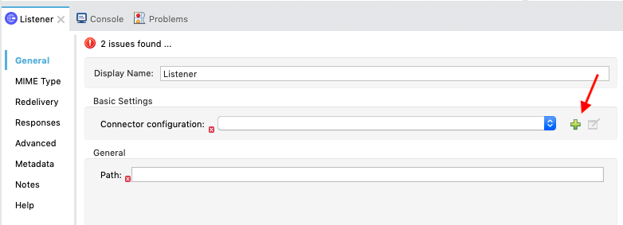
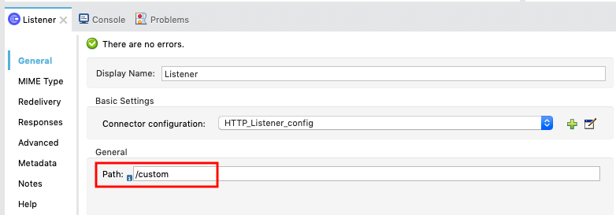
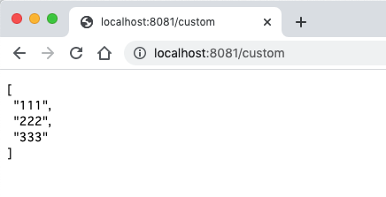

Last Updated: 2021-06-24
Overview
This guide provides an overview of the features of MUnit to run a custom assertion using the ‘Run Custom' operation.
What you'll build
You'll create a new Java class with a custom assertion and then create a test suite to test the Mule flow using the custom assertion.
What you'll learn
- How to create a custom assertion module in Java
- How to execute the custom assertion in MUnit test suite
What you'll need
- Anypoint Studio 7.5.0 or later
- MUnit 2.2.5 or later
- MUnit Anypoint Studio Plugin 2.5.0 or later
- Mule Runtime Engine 4.3.0 or later
Start Up Anypoint Studio
Open Anypoint Studio if you haven't opened it. Any workspace is fine.
Create a new Mule Project
From File menu choose New > Mule Project.

In the New Mule Project window, give the project a name (e.g. munit-run-custom), select a Runtime (e.g. Mule Server 4.3.0 EE), and then click on Finish.
Set up HTTP listener
Once the new project is created, you'll be presented with a blank canvas.
From the Mule Palette on the right drag and drop HTTP > Listener component onto the canvas.
For the Mule Properties of the Listener, click on the green plus sign to create a new Connector configuration.

Under the General tab, and in the Connection section, keep the default selection. Then click on OK.
Back in the Listener Mule properties tab, fill in the Path field with the following:
/custom

Set up Transform Message component
From the Mule Palette on the right drag and drop Core > Transform Message component onto the flow created in the previous step.
Click on the Transform Message component. Copy and paste the following DataWeave Script.
%dw 2.0
output application/json
---
['111','222','333']Set up Logger component
From the Mule Palette on the right drag and drop Core > Logger component onto the flow created in the previous step.
Click fx button on Message field to make it Expression Mode.

Set the Message field to the following:
payloadStart up the Mule Application
Our next step is to test the flow we've built. Right click on the canvas and choose Run project munit-run-custom.
The Console tab should pop-up now. Wait for the status to show DEPLOYED before moving onto the next step.
Run the Mule Application to test
Open up your browser and enter http://localhost:8081/custom in the URL bar.
If everything was configured correctly, you should see the following screen below:

Hit Terminate icon and stop the application.
Generate blank MUnit test case
Back in Studio, let's create the Munit Test Suite.
Select and right-click on the flow. Choose MUnit > Create blank test for this flow.
The blank MUnit Test scope will be created. In the execution, you'll see the Flow Reference to the flow in the Mule application.
Add MUnit Assert maven dependency into the project
Next we want to create the custom assertion using a Java class.
In the Package Explorer for the project, find pom.xml and open the file.

Add following entry inside dependencies tag:
<dependency>
<groupId>com.mulesoft.munit</groupId>
<artifactId>munit-assert</artifactId>
<version>2.3.4</version>
<scope>test</scope>
</dependency>Create a custom assertion
In the Package Explorer for the project, find the src/test/java folder.
Right click on the folder and select New > Class
In the New Java Class window, fill in the Package: field with:
com.mulesoft
And the Name: field with:
CustomAssertion
and then click on Add... for the Interfaces: field.
In the popped up window, type in
MunitAssertion
in the Choose interfaces: field and select the first matching item.
Click on OK
Click on Finish to close the window.
You'll see the newly created Java class with the auto-generated method stub.
Copy and paste the following code into the execute method:
if (!"\"111\"".equals(arg0.getValue() + "")) {
throw new AssertionError("Error: the payload is incorrect");
}This code will check the value of the payload that is passed into the custom assertion. If it doesn't equal the value, it will throw an assertion error.
Export the custom assertion module
Classes from an application that are meant to be used by the MUnit module need to be exported in order for them to be accessible. In order to do that, you need to modify the mule-artifact.json file.
You can find mule-artifact.json file in the project folder. Double click on the file to open it so we can edit it.
The initial file looks like this:
Copy and paste the following code into the file:
{
"minMuleVersion": "4.3.0",
"classLoaderModelLoaderDescriptor": {
"id": "mule",
"attributes": {
"exportedPackages": [
"com.mulesoft"
]
}
}
}Notice the exportedPackages field contains the package that we just created.
Build the Test Scope
Let's finish building the Test scope. From the Mule Palette, drag and drop the MUnit Tools > Run custom operation into the Validation side of the scope.
In the Mule Properties window, fill in the following fields with the corresponding data:
Assertion:
com.mulesoft.CustomAssertion
Expression:
#[payload[0]]
In this next section, we'll run the MUnit suite and see the results of the test. The Studio Console will show the output of the flow. Additionally there are views for MUnit to show the results, errors, messages, and coverage reports.
Run the test suite
Now that the test is setup, let's run the test suite and see if it passes.
Right click on the flow and select Run MUnit suite.
If everything was configured correctly, the Console will show that the test was a success.
Additionally the MUnit tab will show the run was successful with zero errors and failures.
In the MUnit Coverage tab, click on Generate Report
A MUnit Coverage Report will be generated and show an overview of the overall coverage of the tests.
Lastly, if you switch back to the Mule flow, you'll see a green checkmark next to each processor that shows what the MUnit test covered.
Congratulations, you've successfully create a custom assertion and leverage it in MUnit test case.
What's next?
Check out some of these codelabs...
- TBD